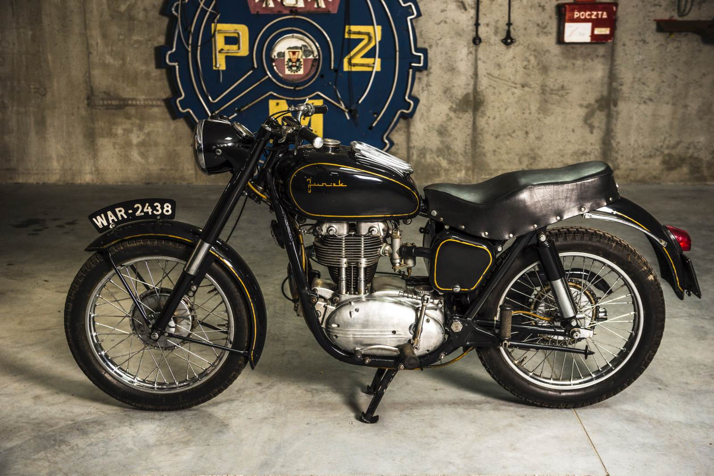
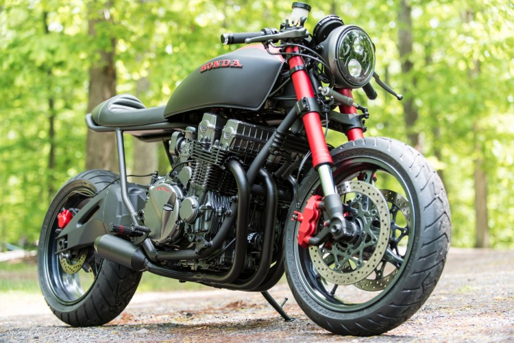
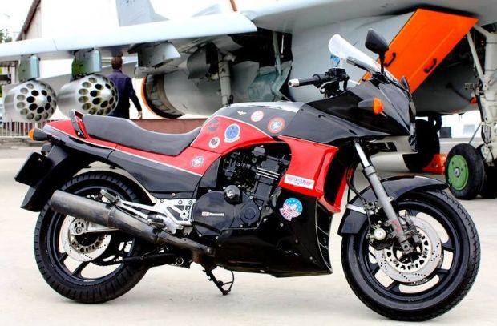
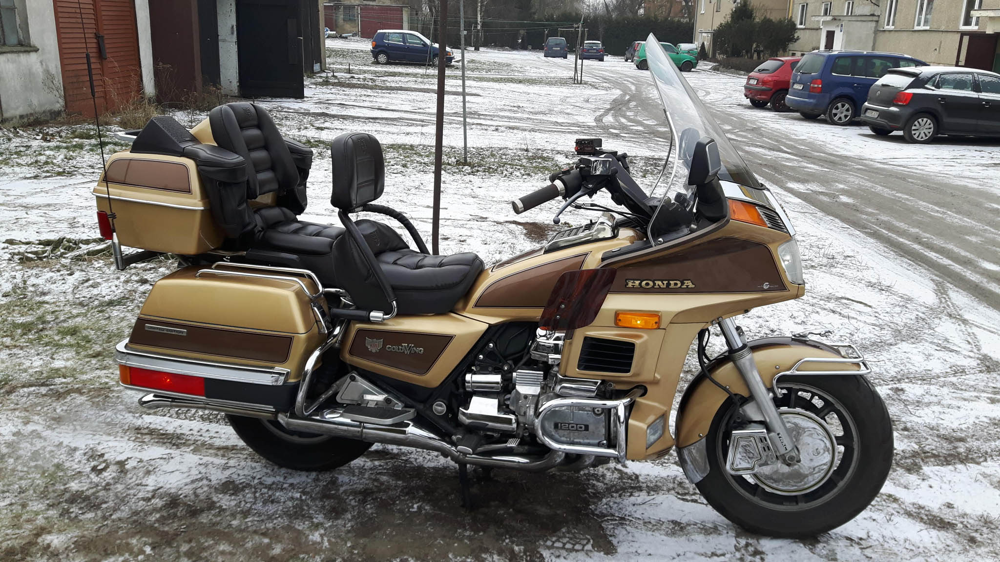
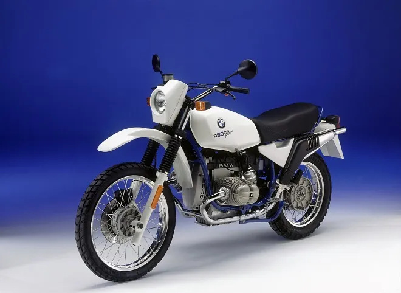

Jawa TS350
 Dźwięk silnika oraz jego osiągi sprawiały, że osobom postronnym włosy stawały dęba.
Nic dziwnego: dwa cylindry,
moc na poziomie 27 KM (podczas, gdy rodzimy „Maluch” dysponowa
ł mocą zaledwie 25 koni mechanicznych). Te liczby robiły wrażenie.
Dźwięk silnika oraz jego osiągi sprawiały, że osobom postronnym włosy stawały dęba.
Nic dziwnego: dwa cylindry,
moc na poziomie 27 KM (podczas, gdy rodzimy „Maluch” dysponowa
ł mocą zaledwie 25 koni mechanicznych). Te liczby robiły wrażenie.
Dźwięk silnika oraz jego osiągi sprawiały, że osobom postronnym włosy stawały dęba.
Nic dziwnego: dwa cylindry,
moc na poziomie 27 KM (podczas, gdy rodzimy „Maluch” dysponowa
ł mocą zaledwie 25 koni mechanicznych). Te liczby robiły wrażenie.
MZ ETZ 250/251
Jednocylindrowy silnik o pojemności 243 ccm generował moc 21 KM co było niezłym wynikiem.
Grzechem byłoby nie wspomnieć o modelu 251,
pieszczotliwie nazywany „Bananem” ze względu na charakterystyczny kształt zbiornika.
Junak M07

Pierwsze Junaki przedstawiono już w 1954 r., ale na rozpoczęcie seryjnej produkcji czekały jeszcze trzy lata.
Początkowo planowano, że będą to ciężkie motocykle wyposażone w półlitrowy silnik, ale w końcu stanęło na pojemności 349 ccm.
Simson S51 Simson przez lata obecności na rynku dorobił się opinii niezawodnego,
a poza tym zawsze był dobrą inwestycją. Nadal jest. Ceny tego motoroweru cały
czas trzymają się nieźle z wyraźną tendencją wzrostową w przypadku dobrze utrzymanych modeli!
Simson przez lata obecności na rynku dorobił się opinii niezawodnego,
a poza tym zawsze był dobrą inwestycją. Nadal jest. Ceny tego motoroweru cały
czas trzymają się nieźle z wyraźną tendencją wzrostową w przypadku dobrze utrzymanych modeli!
Simson przez lata obecności na rynku dorobił się opinii niezawodnego,
a poza tym zawsze był dobrą inwestycją. Nadal jest. Ceny tego motoroweru cały
czas trzymają się nieźle z wyraźną tendencją wzrostową w przypadku dobrze utrzymanych modeli!
Honda CB 750 Nighthawk
Produkowany był przez Hondę od roku 1982 do blisko 2003.
Ten sam silnik z hydraulicznie kasowanym luzem zaworowym mogliście znaleźć w sportowym CBX 750,
(oczywiście w różnych wariacjach). W tamtych czasach ten piec wzbudzał respekt!
Kawasaki GPZ900R
Osiągami przewyższał motocykle konkurencji o wyższych pojemnościach tj. Yamaha FJ 1100 czy kultowe Suzuki GSX 1100.
Model ten w Europie często mogliśmy spotkać w wersji zblokowanej
(w zależności od wariantu). Na rynek Amerykański trafiał w wersji odblokowanej.
Yamaha Tenere 600 Tenere 600 zadebiutowała w roku 1983 i od razu rozpaliła wyobraźnię miłośników terenowo-turystycznych maszyn.
Nie brakowało chętnych na chłodzonego powietrzem jednocylindrowca o pojemności 595 ccm, mocy 44 KM i maksymalnym momencie obrotowym 49 Nm.
Tenere 600 zadebiutowała w roku 1983 i od razu rozpaliła wyobraźnię miłośników terenowo-turystycznych maszyn.
Nie brakowało chętnych na chłodzonego powietrzem jednocylindrowca o pojemności 595 ccm, mocy 44 KM i maksymalnym momencie obrotowym 49 Nm.
Tenere 600 zadebiutowała w roku 1983 i od razu rozpaliła wyobraźnię miłośników terenowo-turystycznych maszyn.
Nie brakowało chętnych na chłodzonego powietrzem jednocylindrowca o pojemności 595 ccm, mocy 44 KM i maksymalnym momencie obrotowym 49 Nm.
Suzuki GSX-R 750
Aluminiowa rama, dwutarczowy, regulowane zawieszenia, niska masa i mocny,
czterocylindrowy rzędowy silnik generujący 100 KM i 70 Nm.
Te atrybuty czyniły z niego motocykl właściwie bezkonkurencyjny w segmencie sportowych dwukółek.
Honda Gold Wing/ GL1100
GL 1100 został wypuszczony po raz pierwszy w roku 1979, jako model na rok 1980.
Otrzymał elektroniczny zapłon oraz zmieniono zawieszenie – od teraz regulacja odbywała się za pomocą powietrza –
system ten zastosowano po raz pierwszy przy produkcji motocykli
BMW R 80 G/S
Sprzęt ten produkowany był w latach 1980 – 1987. To jeden z pierwszych przedstawicieli motocykli typu turystyczne enduro.
Przy okazji jest to pierwszy motocykl enduro z wielocylindrowym silnikiem i jednostronnym wahaczem.
Yamaha V-Max 1200 Pierwszy V-Max wyjechał do salonów sprzedaży w roku 1985, a sprzedawany był do roku 2007 – oczywiście po wielu modernizacjach. V-Maxa ciężko sklasyfikować.
Jedno jest pewne V-Max zawsze robił duże wrażenie na każdym kto aktualnie miał możliwość na niego patrzeć.
Pierwszy V-Max wyjechał do salonów sprzedaży w roku 1985, a sprzedawany był do roku 2007 – oczywiście po wielu modernizacjach. V-Maxa ciężko sklasyfikować.
Jedno jest pewne V-Max zawsze robił duże wrażenie na każdym kto aktualnie miał możliwość na niego patrzeć.
Pierwszy V-Max wyjechał do salonów sprzedaży w roku 1985, a sprzedawany był do roku 2007 – oczywiście po wielu modernizacjach. V-Maxa ciężko sklasyfikować.
Jedno jest pewne V-Max zawsze robił duże wrażenie na każdym kto aktualnie miał możliwość na niego patrzeć.
WSK 125 Ok, to trochę naciągane, bo WSK produkowana była już w latach 60 i tak naprawdę z wieloma zmianami klepana była w Świdniku do roku 85′.
W czasach prosperity była już przestarzała, nieekonomiczna i bardzo awaryjna.
Ok, to trochę naciągane, bo WSK produkowana była już w latach 60 i tak naprawdę z wieloma zmianami klepana była w Świdniku do roku 85′.
W czasach prosperity była już przestarzała, nieekonomiczna i bardzo awaryjna.
Ok, to trochę naciągane, bo WSK produkowana była już w latach 60 i tak naprawdę z wieloma zmianami klepana była w Świdniku do roku 85′.
W czasach prosperity była już przestarzała, nieekonomiczna i bardzo awaryjna.